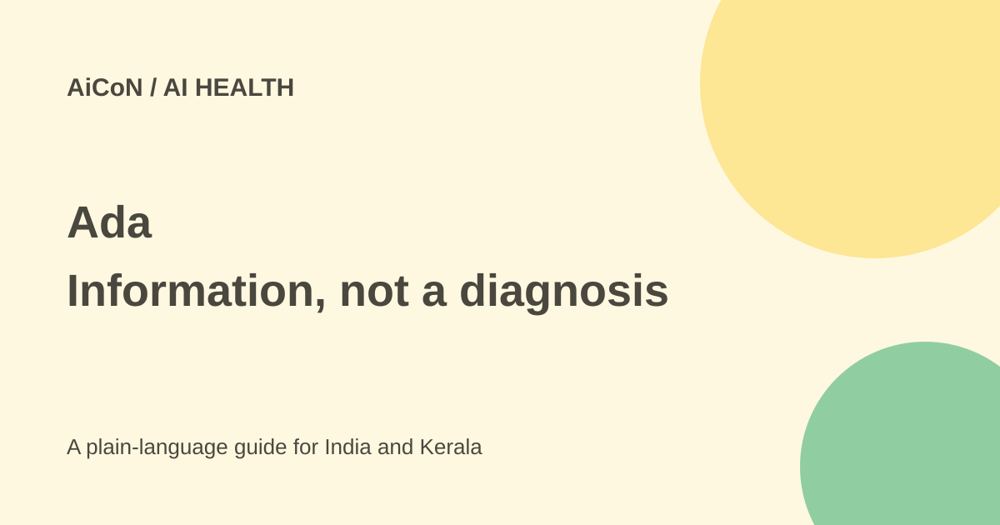

Ada: free symptom checker, languages and medical limits
Ada asks questions about symptoms and offers possible causes and care options. It cannot diagnose a condition or replace a doctor, and it should not delay urgent care.

What does Ada do?
Ada's app connects users to a symptom assessment. You enter information about how you feel and answer follow-up questions. The service uses medical knowledge and technology to suggest possible causes and next steps.
The company's help page says clearly that Ada cannot give a medical diagnosis and is not intended to replace a doctor or qualified healthcare practitioner. A possible cause is a suggestion, not proof that you have that condition. A condition missing from the results is not proof that you do not have it.
Is the symptom checker free?
The official app page describes its symptom checker as free. The app is offered through Android and iPhone download links. This guide does not promise that appointments, treatment, tests or external services suggested after an assessment are free.
Availability and the route into an assessment can vary by country, app version or partner platform. Use the official download links and read the consent screen you actually see. Do not assume every website using Ada has identical data-sharing arrangements.
Which languages are listed?
The official language help page lists English, German, French, Spanish, Portuguese, Romanian and Swahili. Hindi and Malayalam are not in that list. This matters when a reader cannot describe a symptom accurately in English or another supported language.
The help page says the language setting is in the app's Settings menu. Choosing a language you do not understand can make a health assessment less useful. Ask a qualified healthcare professional when communication is difficult, rather than guessing at important questions.
How to use it carefully
- Start from Ada's official app page and read the service information.
- Check age requirements and the privacy and health-data consent screens.
- Select a language you understand.
- Enter accurate symptoms, duration and relevant history.
- Read the entire report, including its care suggestions and limitations.
- Use it to organise questions for a healthcare professional, not to confirm a diagnosis.
- Seek care when symptoms are severe, worsening or worrying, regardless of a reassuring app result.
Do not change prescribed medicine or start a treatment solely because of an AI assessment. The app cannot perform a physical examination, measure all relevant signs or replace the professional judgement needed for an individual case.
Not an emergency service
If you feel very unwell or think there may be an emergency, seek urgent medical help. Do not finish an app questionnaire before getting care. This guide is about using a software service, not assessing your symptoms or deciding how urgently a particular person needs treatment.
There is no promise that a short assessment detects every dangerous condition. A good-looking interface, a confidence claim or a large user count does not remove that limit. For a child or another person, use appropriate professional care and check who is legally allowed to provide their information.
Health-data privacy and age
Ada's checked privacy policy says users must be at least 16. Using it for another person is permitted only where you are legally competent to consent or authorise consent for that person.
The policy says symptom assessment requires consent to analyse the health information you provide. It can include symptoms, medical history and other personal details. Some partner integrations may share information with the partner, with advance information about that setup. Deleting an account does not necessarily mean every record is immediately deleted; the policy gives retention exceptions.
Read the current policy rather than treating "free" as a privacy guarantee. Keep private health reports out of public posts or group chats unless the person has chosen to share them.
What changed since the original AiCoN post?
This article expands today's #AI95 post with steps, the listed age rule and health-data handling. It keeps the seven-language list and the warning that Ada cannot diagnose or replace medical care.
Frequently asked questions
Does Ada diagnose me?
No. Its own help page says it cannot provide a diagnosis.
Can I use it in Malayalam?
Malayalam is not among the seven languages currently listed.
Does a free assessment mean free treatment?
No. Treatment and other services are separate.
Sources: Official app · Official language list · Diagnosis limitation · Privacy, age and consent. Checked 7 October 2026.